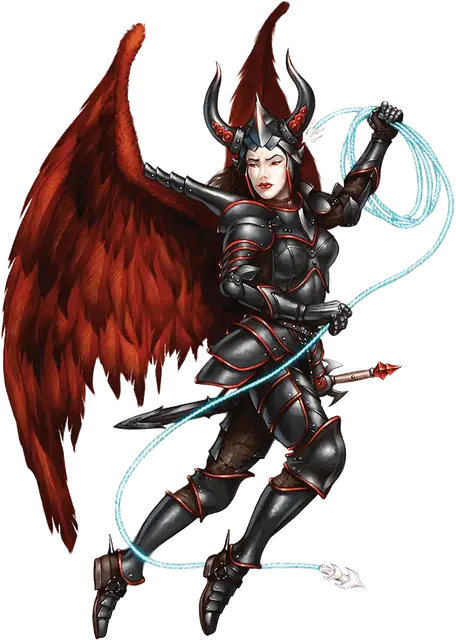

Эриния
Erinyes
Среднее Исчадие (Дьявол), законно-злое

Класс Доспеха 18 (латы)
Хиты 153 (18к8 + 72)
Скорость 30 футов, летая 60 футов
| мод | спас | ||
|---|---|---|---|
| СИЛ | 18 | +4 | +4 |
| ЛОВ | 16 | +3 | +7 |
| ТЕЛ | 18 | +4 | +8 |
| мод | спас | ||
|---|---|---|---|
| ИНТ | 14 | +2 | +2 |
| МДР | 14 | +2 | +6 |
| ХАР | 18 | +4 | +8 |
Сопротивление урону холод; дробящий, колющий, рубящий от немагических атак, кроме нанесённых посеребрённым оружием
Иммунитет к урону огонь, яд
Иммунитет к состояниям отравление
Чувства истинное зрение 120 футов, пассивное Восприятие 12
Языки Инфернальный, Телепатия 120 фт.
Опасность 12 (8400 опыта)
Бонус мастерства +4
Особенности
Адское оружие. Атаки оружием эринии являются магическими, и причиняют при попадании дополнительный урон ядом 13 (3к8) (уже учтён в атаках).
Сопротивление магии. Эриния совершает с преимуществом спасброски от заклинаний и прочих магических эффектов.
Веревка опутывания. Некоторые эринии обладают верёвками опутывания [rope of entanglement]. Когда такие эринии используют свое действие Мультиатака, они могут использовать веревку вместо двух атак.
Вариант: Призыв дьявола. У некоторых дьяволов может быть действие, позволяющее им призывать других дьяволов.
Призыв дьявола (1/день). Дьявол выбирает, кого призвать, и пытается это сделать. Эриния получает 50% шанс призыва 3к6 игольчатых дьяволов (Спинагон) [spined devil], 1к6 бородатых дьяволов (Барбазу) [bearded devil] или одной эринии [erinyes].
Призванный дьявол появляется в свободном пространстве в пределах 60 футов от призывателя, и действует как его союзник, не имеющий способности призывать дьяволов. Он призывается на 1 минуту или пока призыватель не умрёт или действием его не отпустит.
Действия
Мультиатака. Эриния совершает три атаки.
Длинный меч. Рукопашная атака оружием: +8 к попаданию, досягаемость 5 футов, одна цель. Попадание: Рубящий урон 8 (1к8 + 4) или рубящий урон 9 (1к10 + 4), если используется двумя руками, плюс урон ядом 13 (3к8).
Длинный лук. Дальнобойная атака оружием: +7 к попаданию, дистанция 150/600 футов, одна цель. Попадание: Колющий урон 7 (1к8 + 3) плюс урон ядом 13 (3к8), и цель должна преуспеть в спасброске Телосложения Сл 14, иначе станет отравленной. Яд действует до тех пор, пока не будет устранен заклинанием малое восстановление [lesser restoration] или подобной магией.
Реакции
Парирование. Эриния добавляет 4 к КД против одной рукопашной атаки, которая должна попасть по ней. Для этого эриния должна видеть атакующего, и должна использовать рукопашное оружие.
Описание
«ОНИ ЖИВУТ МЕЧОМ, И ИМ ЖЕ УБИВАЮТ. ИХ КРАСОТА — НИЧТО ПО СРАВНЕНИЮ С ИХ ГНЕВОМ»
— ИЗ КНИГИ МЕРЗКОЙ ТЬМЫ
Самые прекрасные и завораживающие из всех младших и старших дьяволов — это эринии, дисциплинированные и яростные воины. Пикируя с небес, они несут быструю смерть существам, предавшим их повелителей или нарушившим эдикты Асмодея. Эринии выглядят как гуманоиды мужского или женского пола с фигурами, достойными изваяний, и большими пернатыми крыльями. Большинство одето в стилизованную броню и рогатые шлемы, и пользуется изысканными мечами и луками. У некоторых при себе есть веревки опутывания, чтобы обездвиживать сильных противников.
Легенды гласят, что первые эринии были ангелами, падшими с Верхних Планов из-за какого-то проступка или искушения. Эринии всегда пользуются возможностью быть неверно принятыми за ангела, чтобы легче выполнить свою миссию по завоеванию или совращению.
См. дополнительно статью: "Бестиарий: Дьяволы"